| 日付 | 2025年8月12日（火） - 2025年8月17日（日） | ||||||||||
|---|---|---|---|---|---|---|---|---|---|---|---|
| 山域 | 北アルプス | ||||||||||
| メンバー | 単独 | ||||||||||
| 山行形態 | 5泊6日テント、車中泊 | ||||||||||
| アクセス | 車、バス、電車 | ||||||||||
| ルート (Map) |
|
3日目
昨日、キャンプ場の管理人に五色ヶ原まで12時間かかるから早立ちするよう言われた。
そんなにかかる訳ないよね、と思いながらも周りがガサゴソしだすので3時に起きてしまい、
未明の4時5分に出発する。
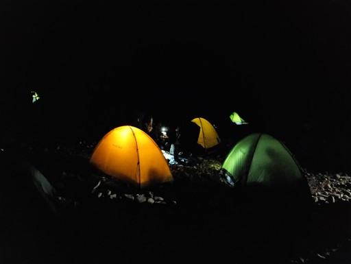
最初は沢の近くを登っていたが、暗くてよく見えない。
薬師平辺りで樹林帯を抜けて少し明るくなる。
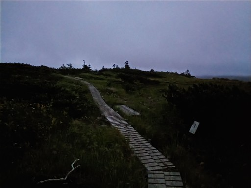
本日も雲が厚く、展望は期待できなさそうだ。
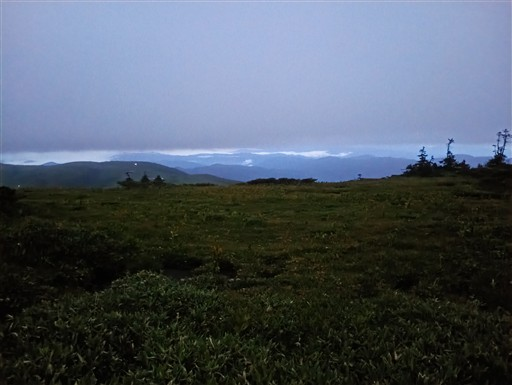
薬師岳山頂部は完全に雲の中。
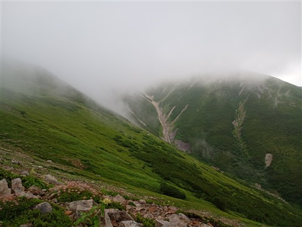
この辺りまでは辛うじて展望が広がる。ここから雲の中に突入だ。
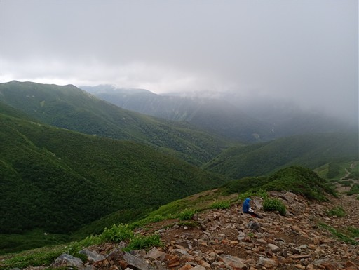
薬師岳山荘を通過。
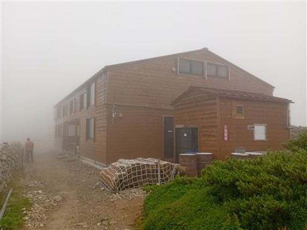
石が大量に積み重なっている無機質な登山道。

避難小屋。登山道は少し下を巻いている。
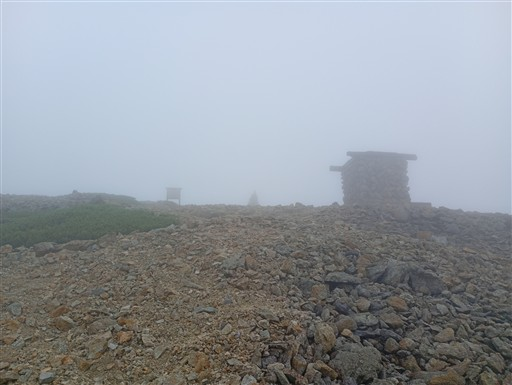
雲の中の尾根道を行く。
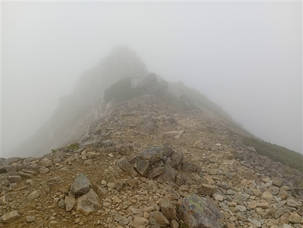
薬師岳山頂に到着。標高2926m。
全く展望は広がらない。
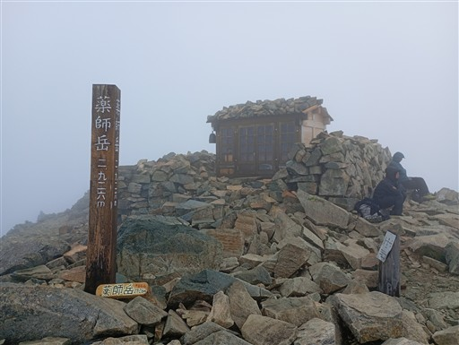
山頂の祠の周りに石仏が並んでいる。
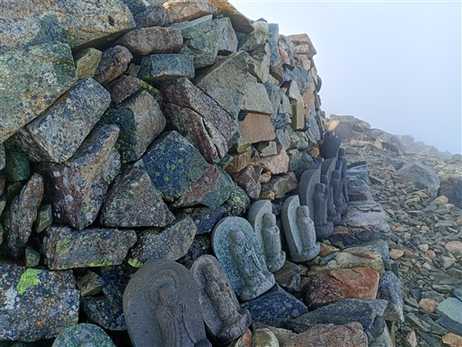
時折、雲が消えて青空が広がることがあるが、展望は広がらない。
30分待ったが、すぐには雲は取れないと判断し、先に進むことにする。

北薬師岳に向けて稜線を歩く。

結構、道幅の狭い痩せ尾根の稜線だ。
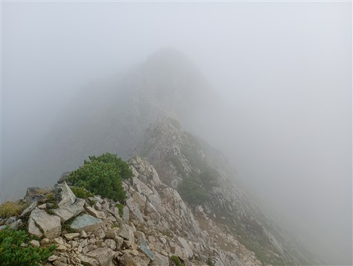
展望が開けていれば、素晴らしい登山道であろうことは想像できる。
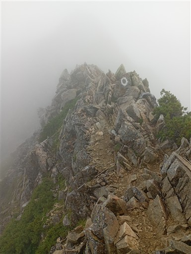
北薬師岳に到着。
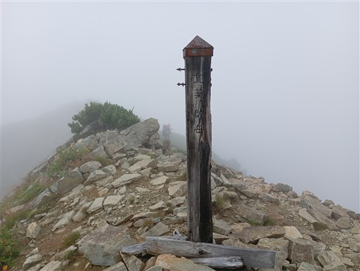
わずかに雪が残っている。
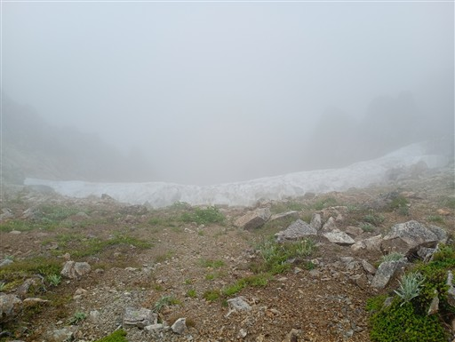
さらに北上。大きな石が折り重なっている。
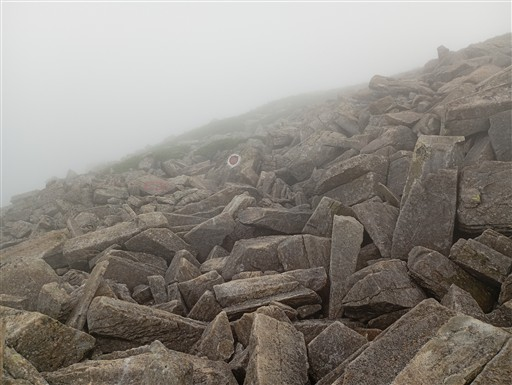
この辺りは二重山稜になっているのか、窪地を歩く。
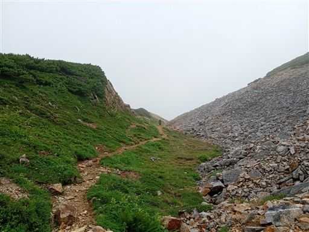
ハイマツ帯をウロウロしているのはホシガラスだろうか？
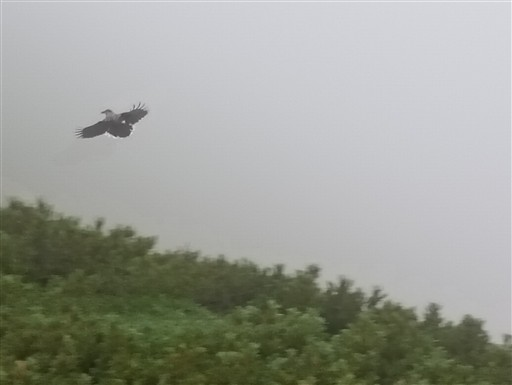
間山に到着。何の間か分からないが、すごく安直な名前だ。
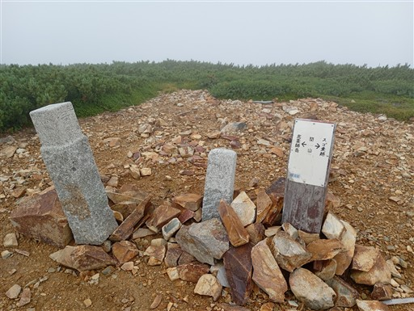
この辺りにはいくつか池がある。
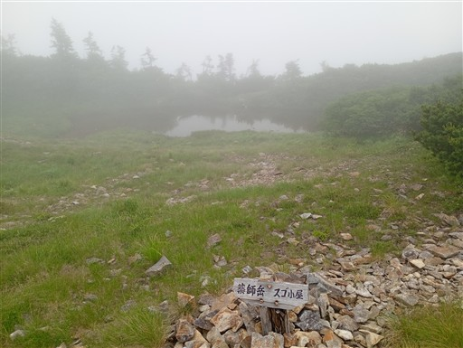
雲の下の方に、黒部川上ノ廊下が見えている。
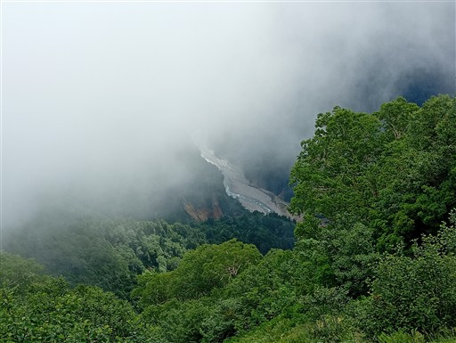
標高はどんどん下がっていき、樹林帯の中に入る。

傾斜が緩くなってきて、湿っぽくなってくる。
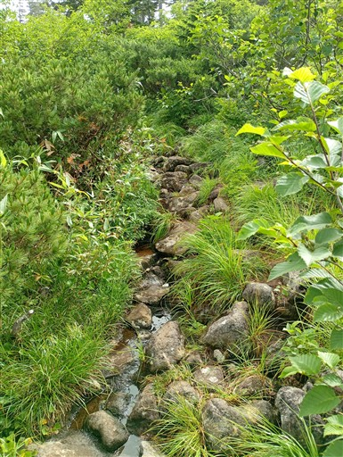
スゴ乗越小屋に到着。
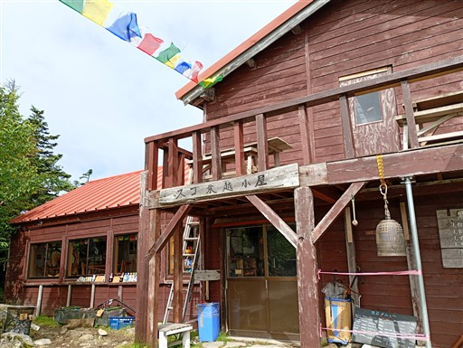
見えているのはどこだろう？赤牛岳の北西尾根辺り？
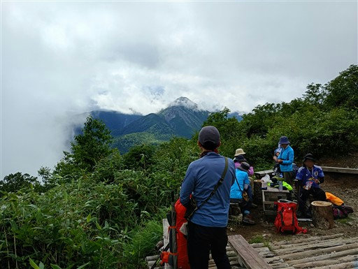
スゴ乗越小屋で休憩したら出発。
ここから五色ヶ原まで水場はないようだ。持っているのは1L。
少々不安を感じたが、重いのは嫌という気持ちの方が勝ってしまった。
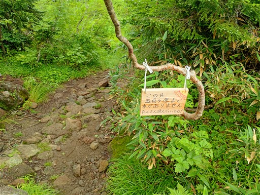
スゴ乗越のテント場。
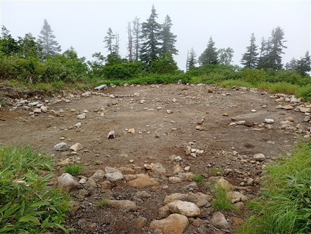
目の前に、これから登る山が聳えているはずだが、良く見えない。
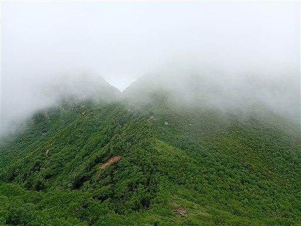
スゴ乗越に到着。標高2145m。薬師岳からとてつもなく下ってきた。
こんなに深く落ちている峠は北アルプス中心部では他にないのではなかろうか？
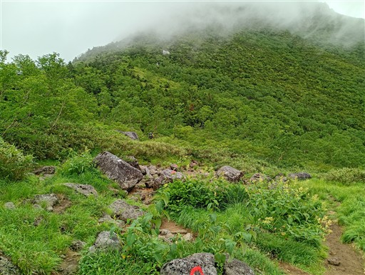
スゴ乗越の標識。ここから越中沢岳への登りがきつそうだ。

まずはスゴの頭への道。かなりの急斜面で苦しい。標高差260mを一気に登る。
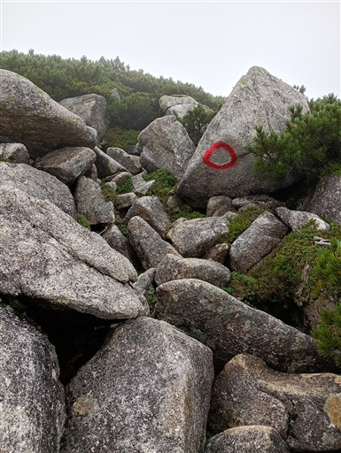
先はあまり見えないが、延々と登りが続く。
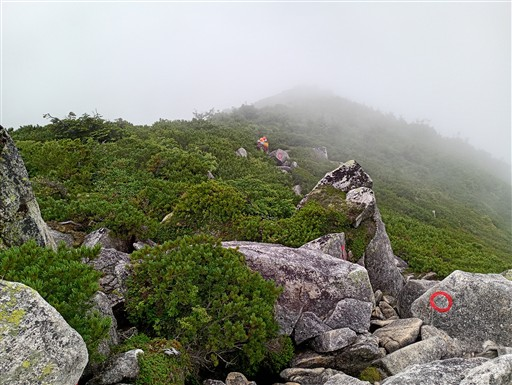
スゴの頭のすぐ下を登山道は巻いている。
どうせ巻くのであれば、全て巻いてくれればよいのに…
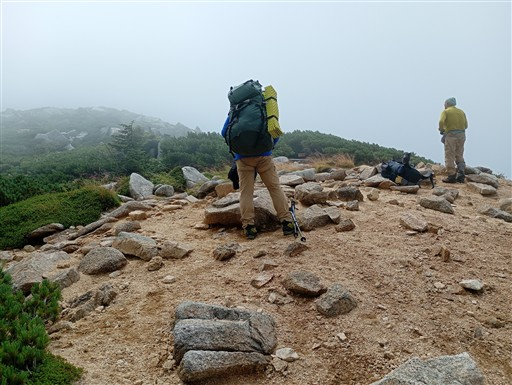
ここから100mほど一気に下る。
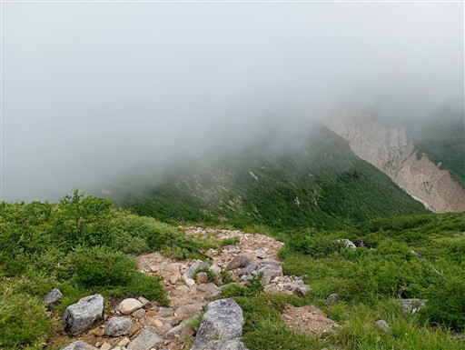
ここから再び270mの登り。どうってことない標高差ではあるのだが、足が前に出ない。
そもそも朝一に薬師岳へ600mほど登っているので疲れがたまっている。
昼食は越中沢岳でと考えていたが、完全にシャリバテだ。よく考えたら歩き始めて8時間くらい経っている。
少し道が広くなったこの場所でラーメンを作って食べる。
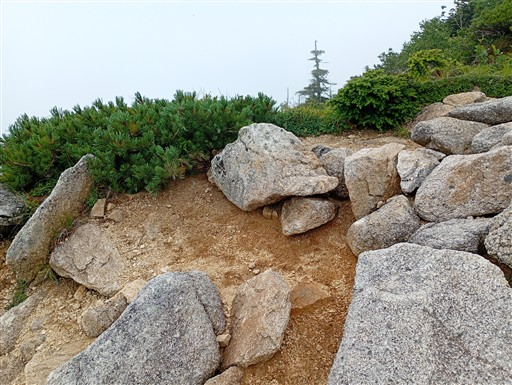
30分程度の食事休憩。食べたら出発。
足が重いのは変わらずだが、一応前に進むようになった。
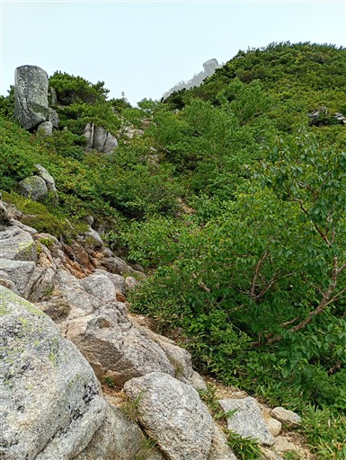
大きな岩が突き立っている。
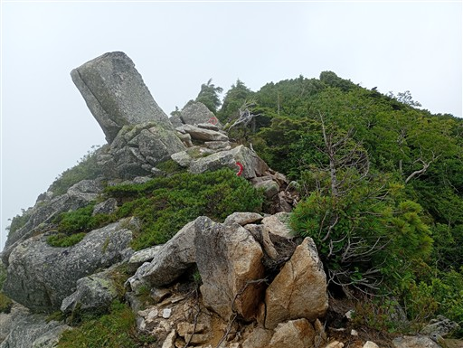
雲が上がってだいぶ展望が広がってきた。
遠くに針ノ木岳が見えている。
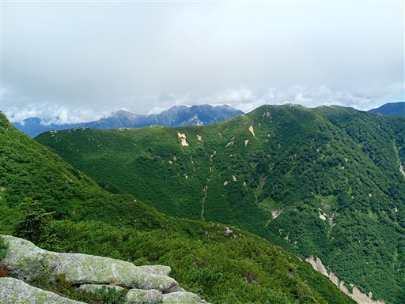
ハイマツ広がる斜面を登っていく。
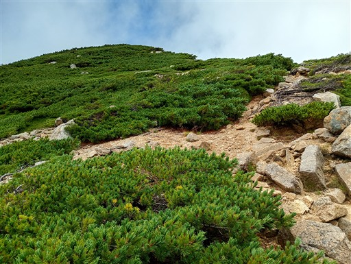
ライチョウを発見。
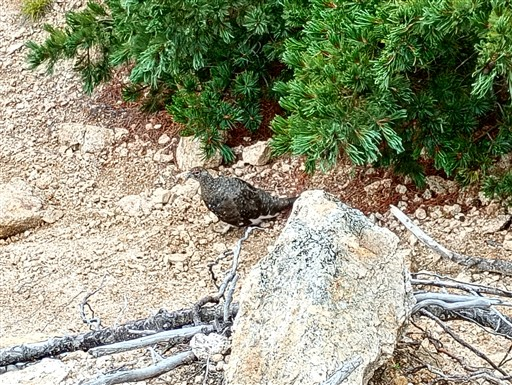
山頂が見えてきた。
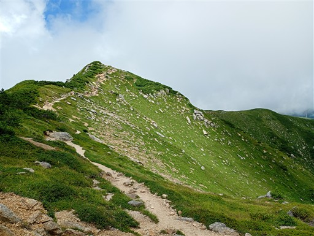
越中沢岳に到着。標高2591m。
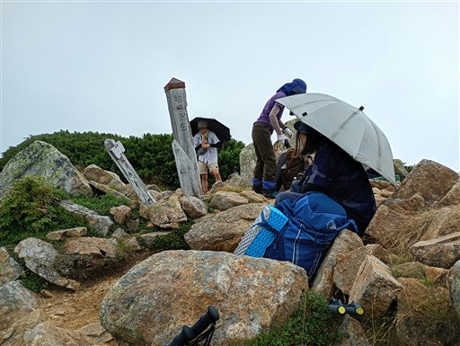
急傾斜の南側とは異なり、北側は緩やかな斜面が広がっている。
ここから鳶山まで、またまた260mの登り。
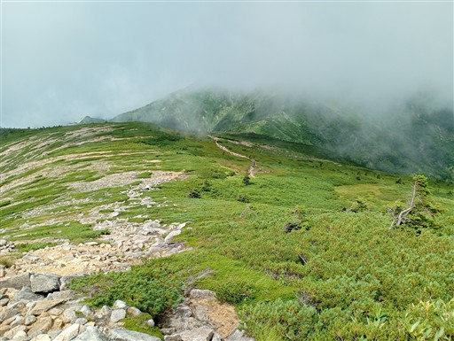
後立山連峰がきれいに見えている。
黒部湖の奥に聳える針ノ木岳は存在感がある。
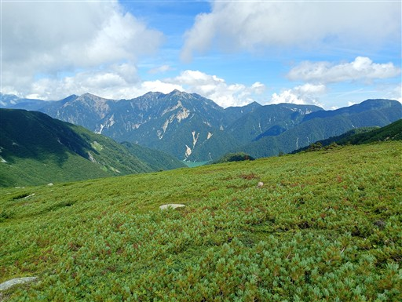
こちらの尾根も少しずつ展望が広がってきた。
目指す本日最後のピーク、鳶山が見えている。
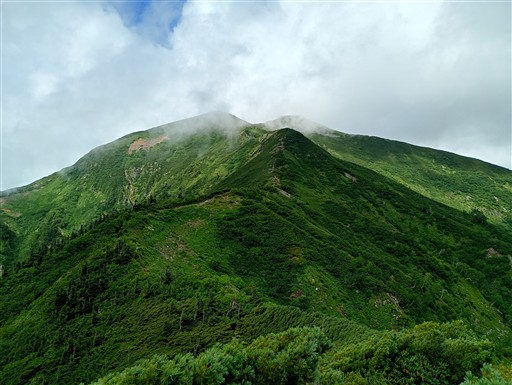
絶景広がる登山道。こういうのを求めていた。
薬師岳でも展望が広がっていれば良かったのだが…
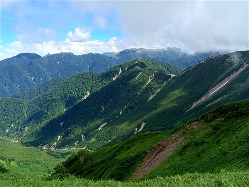
鳶山に到着。標高2616m。
この山は1858年に山体崩壊した鳶山崩れの後に残ったピークだ。
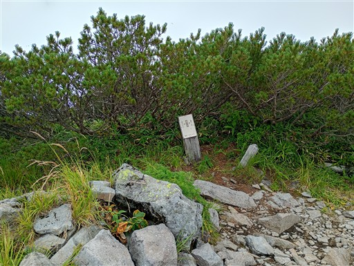
ここはもう五色ヶ原の一角。緩やかな木道を下っていく。
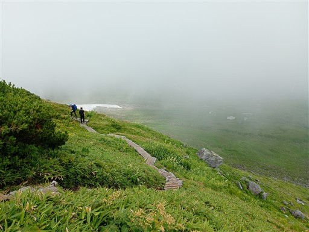
池塘がいくつか並んでいるのが見える。
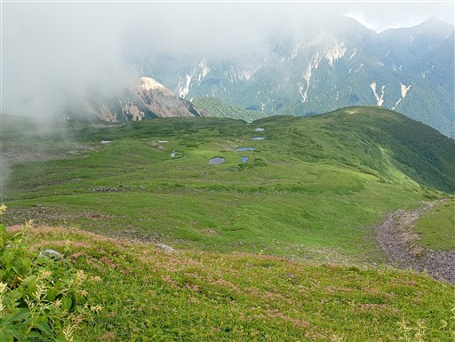
まだ雪が多く残っている。雪の近くでは初夏の花が見られるのでありがたい。
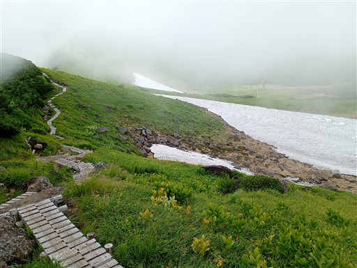
ピンクの花はハクサンフウロ。
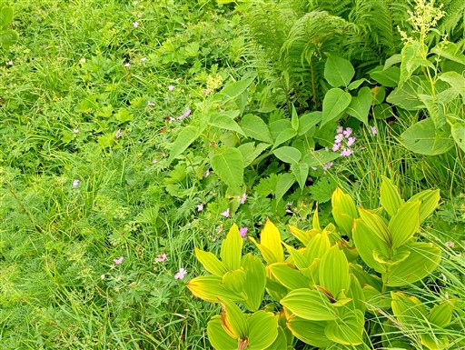
チングルマの花を見るのは本当に久しぶり。
いつも実しか見ておらず、ようやく花を見ることができた。
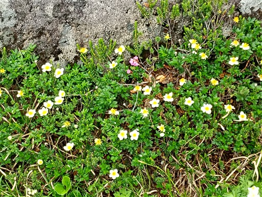
イワイチョウ。
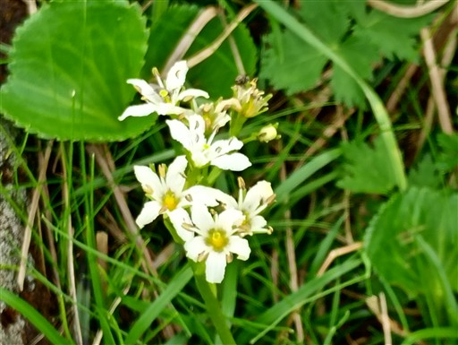
イワカガミ。
ハクサンイチゲ。
五色ヶ原山荘に到着。ここでテント場の受付を済ます。
ここからキャンプ場までは絶景ロード。
緩やかな斜面に続く木道を歩いていく。
小さな池塘。
眼下に五色ヶ原キャンプ場が見えてきた。
この辺りはチングルマが斜面を埋め尽くすように咲いている。
五色ヶ原キャンプ場に到着。
薬師峠から11時間半。本当に12時間かかるコースだった。
水分も不足気味でもう少し汲んでくるべきだった。
水場。ここも水が豊富だ。
背景は夕日を浴びる野口五郎岳、右手に見えるのは赤牛岳だ。
赤牛岳は意外に立派な山容だ。
日の入り近くになっても比較的すいている。
室堂からほど近いこの場所は案外穴場なのかもしれない。
夕飯後、再びチングルマを見に行く。
近くにライチョウがウロウロしていて、本当に山上の楽園という感じだ。